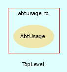

|  |
AbtUsage.rb
The usage reporting class for AbTLinux.
Created by Eric D. Schabell <erics@abtlinux.org> Copyright November 2006, GPL.
This file is part of AbTLinux.
AbTLinux is free software; you can redistribute it and/or modify it under the terms of the GNU General Public License as published by the Free Software Foundation; either version 2 of the License, or (at your option) any later version.
AbTLinux is distributed in the hope that it will be useful, but WITHOUT ANY WARRANTY; without even the implied warranty of MERCHANTABILITY or FITNESS FOR A PARTICULAR PURPOSE. See the GNU General Public License for more details.
You should have received a copy of the GNU General Public License along with AbTLinux; if not, write to the Free Software Foundation, Inc., 51 Franklin St, Fifth Floor, Boston, MA 02110-1301 USA
The main usage method, displays either a given section or all sections.
PARAM String - the name of the help section to be shown.
RETURN void
[ show source ]
# File AbtUsage.rb, line 36
36: def usage( section )
37: puts "Usage: abt.rb [options]\n\n"
38:
39: case section
40:
41: when "packages"
42: usagePackages
43:
44: when "queries"
45: usageQueries
46:
47: when "generation"
48: usageGeneration
49:
50: when "downloads"
51: usageDownloads
52:
53: when "fix"
54: usageFix
55:
56: when "maintenance"
57: usageMaintenance
58:
59: else
60: usagePackages
61: usageQueries
62: usageGeneration
63: usageDownloads
64: usageFix
65: usageMaintenance
66: end
67: end
The usage information for the download commands.
RETURN void
[ show source ]
# File AbtUsage.rb, line 121
121: def usageDownloads
122: puts "\ndownloads:"
123: puts " -d, download [package]\t\tRetrieve given package sources."
124: puts " -u, update [package]|[tree]\tUpdate given package or tree from AbTLinux repository."
125: puts " -n, news\t\t\t\tDisplays newsfeed from AbTLinux website.\n"
126: end
The usage information for the fix commands.
RETURN void
[ show source ]
# File AbtUsage.rb, line 133
133: def usageFix
134: puts "\nfix:"
135: puts " purge-src\t\t\t\tRemove source caches for packages no longer installed."
136: puts " purge-logs\t\t\t\tRemove log files for packages no longer installed."
137: puts " verify-files [package]\t\tInstalled files are verified for given package."
138: puts " verify-symlinks [package]\t\tSymlinks verified for given package."
139: puts " verify-deps [package]\t\tDependency tree is verified for given package."
140: puts " verify-integrity [package]\t\tVerify integrity of installed files for given package."
141: puts " fix [package]\t\tGiven package is verified and fixed if needed.\n"
142: end
The usage information for the generation commands.
RETURN void
[ show source ]
# File AbtUsage.rb, line 109
109: def usageGeneration
110: puts "\ngeneration:"
111: puts " show-updates\t\tShow a package listing with available update versions."
112: puts " html\t\t\tGenerate HTML page from installed packages:"
113: puts " \t\t\t\t(package name with hyperlink to package website and version installed)\n"
114: end
The usage information for the maintenance commands.
RETURN void
[ show source ]
# File AbtUsage.rb, line 149
149: def usageMaintenance
150: puts "\nmaintenance:"
151: puts " build-location [host]\t\tSets global location (default: localhost) for retrieving cached package builds."
152: puts " package-repo [add|remove|list] [URI]"
153: puts " add - add package repository to list."
154: puts " remove - remove a package repository from list."
155: puts " list - display current repository list.\n"
156: end
The usage information for the packages commands.
RETURN void
[ show source ]
# File AbtUsage.rb, line 74
74: def usagePackages
75: puts "\npackages:"
76: puts " -i, install [package]\t\tInstall given package."
77: puts " -ri, reinstall [package]\t\tReinstall given package."
78: puts " -r, remove [package]\t\tRemove given package."
79: puts " -dg, downgrade [version] [package]\tDowngrade given package to given version."
80: puts " -f, freeze [package]\t\tHolds given package at current version, prevents upgrades.\n"
81: end
The usage information for the query commands.
RETURN void
[ show source ]
# File AbtUsage.rb, line 88
88: def usageQueries
89: puts "\nqueries:"
90: puts " -s, search [string | regexp ]\tSearch package descriptions for given input."
91: puts " show-details [package]\t\tShow give package details."
92: puts " show-build [package]\t\tShow build log of given package."
93: puts " show-depends [package]\t\tShow the dependency tree of given package."
94: puts " show-files [package]\t\tShow all installed files from given package."
95: puts " show-owner [file]\t\tShow the package owning given file."
96: puts " show-installed\t\t\tShow list of all installed packages."
97: puts " show-frozen\t\t\t\tShow list of all frozen packages."
98: puts " show-untracked\t\t\tShow all files on system not tracked by AbTLinux."
99: puts " show-journal\t\t\t\tShow the system journal."
100: puts " show-iqueue\t\t\t\tShow the contents of the install queue."
101: puts " show-patches\t\t\t\tShow the current available patches for installed package tree.\n"
102: end